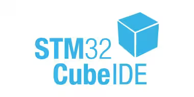

STM32 開発資料（現在執筆中）
STM32を開発していく上で必要な知識をまとめました
はじめての方にも分かりやすくするため、多少厳密ではない部分があります
導入編
STM32の開発環境を導入しよう
・導入編1 STM32をインストールしよう
・導入編2 コードを書くための準備をしよう
基礎編
基本的な機能を実際に動かして体験してみよう
基礎編1~6を使って、基礎編7と8のプログラムを書いてみよう!
サンプルコードを参考にどのようにしたら動くのかを学んでみよう
・基礎編1 LEDをつける
・基礎編2 シリアル通信（送信）
・基礎編3 シリアル通信（受信）
・基礎編4 サーボモータを動かそう(PWM)
・基礎編5 赤外線を検知しよう(ADC)
・基礎編6 SBUSを受信してみよう
・基礎編7 投下装置を作ってみよう
・基礎編8 投下装置を自動化しよう
応用編
2つの通信形式でセンサーからデータを読み取ってみよう
自分でコードを作成する部分が増えるので、少し難しくなってきます
・応用編1 センサーと通信してみよう(I2C通信)
・応用編2 センターの値を読んでみよう
・応用編3 SPI通信を使ってみよう
発展編
センサーのライブラリを書いてみよう
内容が複雑かつ言語化が難しいので対面でやりたいかも
ここまで出来たら、数学の知識と合わせてマルコプのFCが作れるかも?
・発展編1 構造体を使ってみよう
・発展編2 クラスとは
・発展編3 クラスで使える便利な書き方
補足編
必須ではないけど、知っておくと便利な機能を学んでみよう